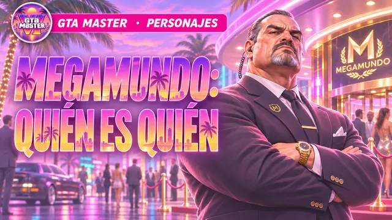
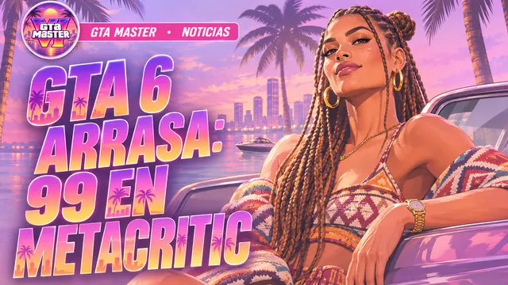
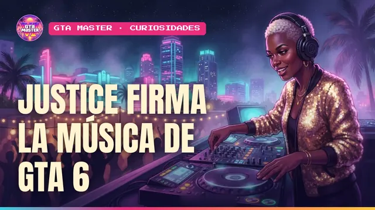
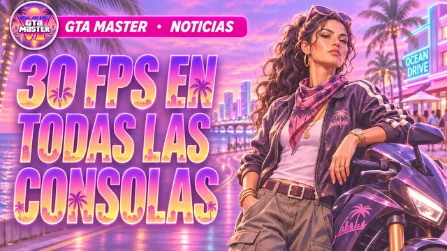
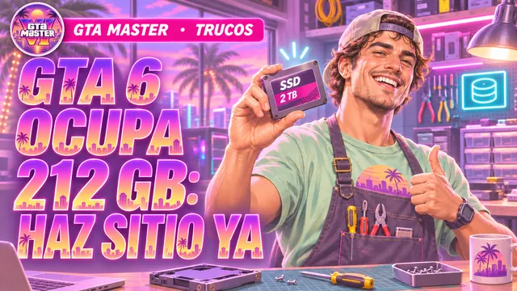

Cada día
Cada díaNoticias de GTA 6
Lanzamiento, personajes, trucos y curiosidades de Grand Theft Auto VI. Siempre con la fuente y, cuando lo hay, con el vídeo.

GTA 6 trucos: los 61 códigos solo se desbloquean al terminar la historia
GTA 6 trucos: hay 61 códigos, pero solo funcionan al acabar la historia y con un reto cada uno. Cómo meterlos en PS5 y Xbox y qué pasa con los trofeos.

Los Miami Heat se convierten en «Vice City» esta noche: camiseta, pista y hora del partido
La víspera del lanzamiento, los Miami Heat juegan contra los Bucks como «Vice City», con pista propia y camisetas diseñadas con Nike y Cactus Jack. Se juega a la 01:00 hora peninsular.

GTA 6 ya se juega en Nueva Zelanda: a qué hora llega a España y Latinoamérica
GTA 6 se desbloquea a medianoche hora local en cada país. Nueva Zelanda abrió la veda a las 12:00 hora peninsular; en España llega a las 00:00 del 19 de noviembre.

¿Cuánto dura GTA 6? Unas 80 horas para un jefe de Rockstar, y el juego no acaba con los créditos
Rob Nelson, de Rockstar North, tardó unas 80 horas en terminar GTA 6. Qué incluía esa partida, cuánto le dedicó PC Gamer y qué se puede hacer después de los créditos.

Megamundo: quiénes son Andrés de León, Petra Navarro y Valentina en GTA 6
Megamundo es el conglomerado de medios en español de GTA 6. Quiénes son Andrés de León, Petra Navarro y Valentina, y por qué Jason y Lucia acaban de escoltas.
PS5: descarga esta actualización antes de medianoche o no podrás jugar a GTA 6
Sony ha publicado una actualización del sistema de PS5 necesaria para jugar a GTA 6. Cómo instalarla hoy y la lista de comprobaciones para jugar a las 00:00 sin sustos.

GTA 6 arrasa en las reseñas: 99 en Metacritic y dieces en IGN y GameSpot
Las reseñas de GTA 6 ya están publicadas: 99 en Metacritic tras 146 críticas, 99 en OpenCritic y 10/10 en IGN, GameSpot y Game Informer. Esto es lo que dice la prensa.

Justice firma la banda sonora original de GTA 6: de «Flower in a Hurricane» al disco del 11 de diciembre
El dúo francés Justice compone la música original de GTA 6. Qué es «Flower in a Hurricane», en qué se diferencia la banda sonora de las radios y cuándo sale el disco.

30 fps en todas las consolas: así funciona GTA 6 en PS5, PS5 Pro y Xbox
Rockstar confirma 30 fps en PS5, PS5 Pro y Xbox Series X|S. Las resoluciones por consola que ha publicado Wccftech, el reescalado de cada una y si llegará un modo a 60 fps.

GTA 6 ocupa 212 GB: cómo hacer sitio en tu consola (y por qué la caja no trae disco)
Rockstar confirma que GTA 6 necesita hasta 212 GB. Cuánto espacio libre te hace falta en PS5, Xbox Series X y Series S, y qué pasa si compraste la edición física.